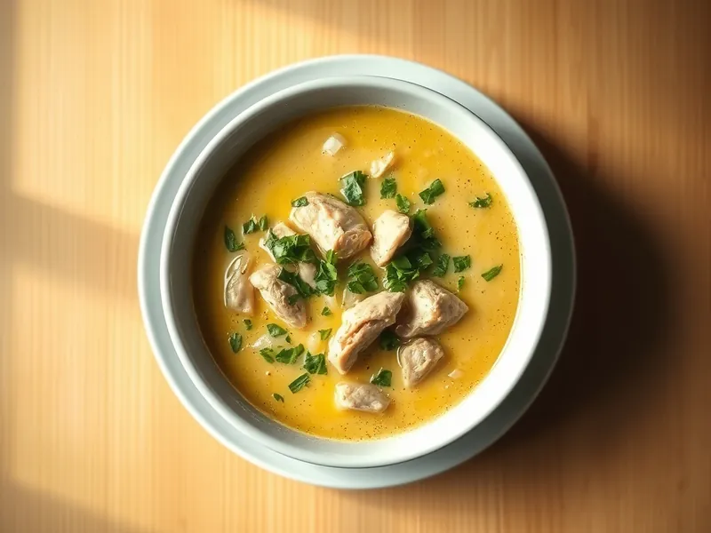

Чихиртма из курицы
Грузинский куриный суп на яичных желтках с уксусом и кинзой
30 мин4 порц.251 ккал на порциюБ 28 · Ж 11 · У 9Кавказская кухня
Открыть в приложении: порции, таймеры, список покупок
Продукты на 4 порц.
- Куриное филе400 г
- Вода1200 мл
- Лук репчатый2 шт
- Сливочное масло30 г
- Мука пшеничная1 ст. л.
- Яйцо куриное2 шт
- Уксус 9%2 ч. л.
- Кинза1 пучок
- Чеснок1 зуб.
- Лавровый лист1 шт
- Соль1,5 ч. л.
Как готовить
- Залейте куриное филе водой, посолите, положите лавровый лист и варите 15 минут на среднем огне после закипания, снимая пену. Достаньте курицу и разберите на волокна.
- Пока варится курица, мелко нарежьте лук и обжарьте в сливочном масле на слабом огне 7 минут до мягкости. Всыпьте муку и жарьте 1 минуту, помешивая.
- Разведите лук с мукой половником бульона, без комков, верните в кастрюлю вместе с курицей. Варите 3 минуты.
- Взбейте яйца с уксусом. Влейте в них 2 половника горячего бульона тонкой струйкой, всё время взбивая, чтобы яйца не свернулись.
- Снимите кастрюлю с огня, влейте яичную смесь, помешивая. Добавьте рубленую кинзу и давленый чеснок, дайте постоять 2 минуты.
Совет. После добавления яиц суп больше не кипятите, иначе он станет хлопьями. Уксус можно заменить лимонным соком.